Ceci est le guide ultime pour déployer votre propre agent de trading auto-améliorable sur Hostinger, étape par étape, depuis la création de votre compte jusqu'à la configuration de votre VPS, en passant par le déploiement de l'agent Hermes et sa mise en ligne. Je vais vous guider à travers littéralement tout dans cette seule vidéo, et restez bien jusqu'au bout car à la fin, je vous montrerai comment vous pouvez créer votre propre agent fonctionnant 24h/24 et 7j/7 en utilisant Claude sur votre propre infrastructure. Alors sans plus attendre, entrons dans le vif du sujet.
Interface & Outils : Hostinger website, Hostinger dashboard, Trading AI course platform
Contenu textuel & Code : Tarifs d'hébergement ($6.49/mo), options de déploiement d'agent IA, menu de gestion du compte (Websites, Domains, Emails, AI agents), et modules de cours sur le trading algorithmique assisté par LLM.
Action / Démonstration : Navigation sur la page de présentation de l'offre d'agent IA, visualisation du tableau de bord utilisateur et présentation du programme de formation.
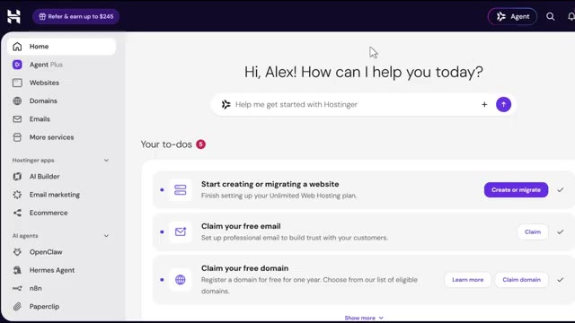
🔍 Agrandir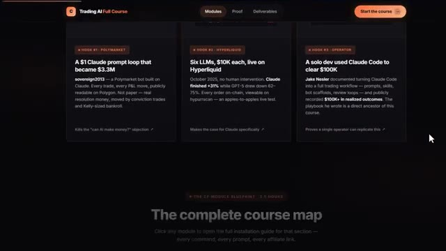
🔍 AgrandirMais d'abord, laissez-moi vous dire pourquoi vous avez réellement besoin de ceci. J'ai donc créé des robots de trading depuis un certain temps maintenant, et il y a une chose que je déteste sincèrement chez presque tous les agents IA du marché, c'est qu'ils oublient tout. La plupart des agents sont coincés avec cette mémoire à court terme, donc ils ne s'améliorent jamais vraiment, et vous finissez par répéter les mêmes instructions à chaque fois que vous ouvrez une nouvelle session, même si vous faites tourner un agent de trading censé apprendre votre stratégie au fil du temps.
Interface & Outils : Graphique de trading (TradingView ou plateforme similaire) et interface de terminal en ligne de commande (CLI).
Contenu textuel & Code : Graphique de prix ETH/USD avec indicateurs techniques, et rapport d'analyse de code Pine Script listant des bugs logiques, erreurs de syntaxe et problèmes de repeint (repainting).
Action / Démonstration : Présentation d'un graphique de trading technique et analyse automatisée de code de stratégie de trading.
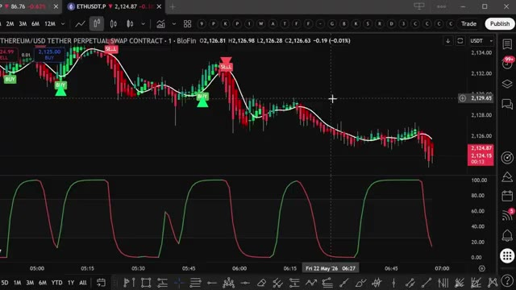
🔍 Agrandir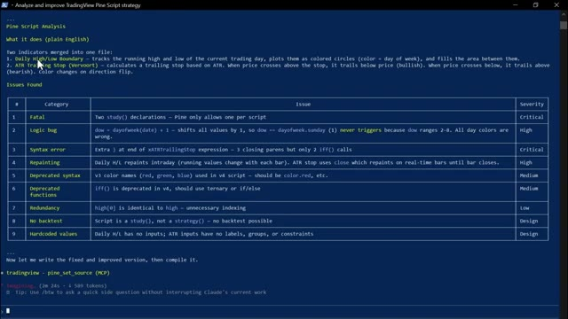
🔍 AgrandirMaintenant, Hermes Agent règle ce problème. Il est doté de cette boucle d'apprentissage intégrée qui affine réellement ses propres compétences et construit une mémoire persistante à partir de chaque interaction. Donc, que vous l'utilisiez pour la recherche, l'automatisation, ou même pour l'intégrer dans votre propre configuration d'agent de trading, il devient véritablement plus intelligent au fur et à mesure que vous l'utilisez au lieu de revenir à zéro.
Interface & Outils : Hermes Agent, tableau de bord analytique web et page d'accueil de la plateforme de courtage Alpaca.
Contenu textuel & Code : Lignes de commande pour l'agent IA, tableau comparatif de performance de modèles (Qwen, DeepSeek, Claude, Grok, Gemini, GPT) avec métriques (P&L, Win Rate), et interface de présentation d'API financière.
Action / Démonstration : Navigation et présentation des outils d'IA et des plateformes d'intégration financière.
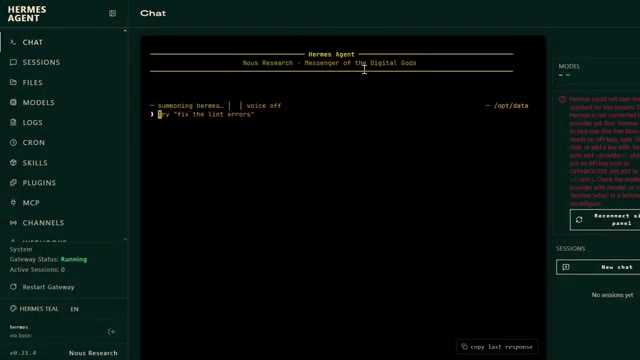
🔍 Agrandir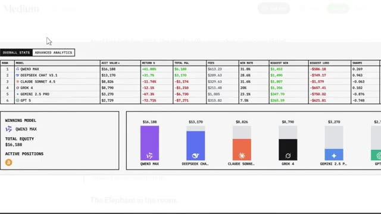
🔍 Agrandir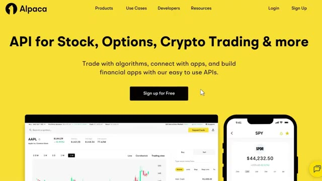
🔍 AgrandirEt Hostinger élimine tous les tracas liés à la configuration. Ils disposent d'un modèle Docker préconfiguré qui permet de le lancer en quelques secondes. Pas besoin de terminal, ni d'expérience avec Docker. L'outil que nous déployons aujourd'hui s'appelle donc Hermes Agent, créé par Noose Research, l'un des principaux laboratoires d'IA open source du moment. Et la différence entre celui-ci et votre chatbot classique, c'est cette boucle d'apprentissage intégrée dont je viens de parler.
Interface & Outils : Navigateur web, tableau de bord Hostinger, site web officiel de Nous Research et Hermes Agent.
Contenu textuel & Code : Interface utilisateur avec des options de configuration d'applications IA, modules de déploiement et description de Hermes Agent comme agent open source sous licence MIT.
Action / Démonstration : Navigation et présentation visuelle de la plateforme d'hébergement et du site officiel du projet Hermes Agent.
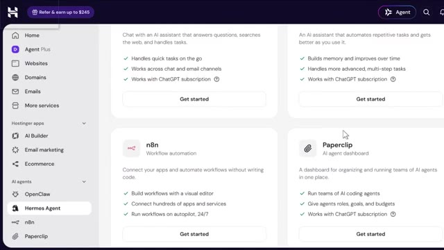
🔍 Agrandir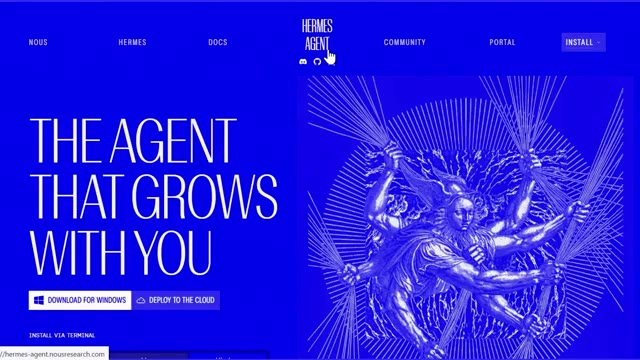
🔍 Agrandir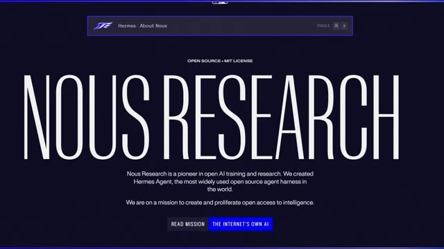
🔍 AgrandirIl ne fait pas seulement que répondre pour oublier aussitôt. Il crée de nouvelles compétences à partir de ce qu'il fait, affine ces compétences au fur et à mesure que vous l'utilisez, et construit une mémoire persistante qui prend réellement de la valeur avec le temps. En plus de cela, il se connecte à plus de 200 modèles via OpenRotor, ainsi qu'à des fournisseurs directs comme Anthropic et OpenAI.
Interface & Outils : Navigateur web affichant les sites d'Hostinger et la documentation officielle d'Hermes Agent.
Contenu textuel & Code : Texte descriptif des fonctionnalités d'Hermes Agent, tarifs d'hébergement VPS, et détails sur les intégrations (Telegram, Discord, Slack, etc.). [DESC_IMAGE_3] Navigation et présentation des offres d'hébergement pour le déploiement de l'agent.
Action / Démonstration : Explications face caméra et analyse conceptuelle des marchés.
Et ça se branche directement sur les plateformes que vous utilisez probablement déjà. Telegram, Slack, Discord, WhatsApp, et même Signal et l'e-mail. Maintenant, voici la partie que la plupart des gens négligent complètement. Un agent IA n'est aussi bon que l'infrastructure sur laquelle il tourne. Si vous faites tourner ça localement sur votre propre ordinateur portable, à la seconde où votre ordinateur se met en veille, votre agent s'éteint avec lui.
Interface & Outils : Navigateur web affichant des pages de documentation et des articles sur l'intelligence artificielle (Hostinger, Vantiq).
Contenu textuel & Code : Texte explicatif sur les agents IA, les fonctionnalités multi-plateformes et les limites des IA statiques par rapport aux IA dynamiques.
Action / Démonstration : Navigation et défilement sur des pages web présentant des solutions et articles sur l'infrastructure des agents IA.
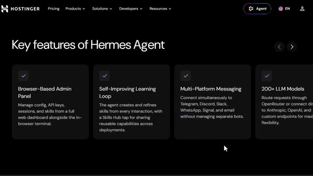
🔍 Agrandir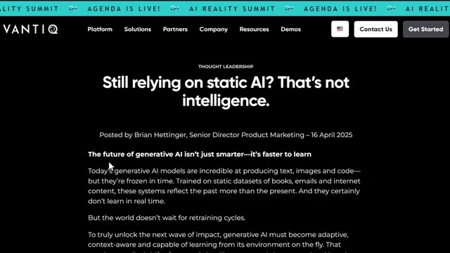
🔍 Agrandir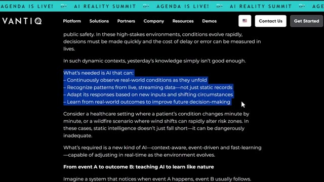
🔍 AgrandirRedémarrez votre machine et la mémoire peut être complètement effacée, et vous êtes également limité par le matériel que vous possédez personnellement, ce qui signifie qu'il est fondamentalement impossible d'évoluer. C'est exactement le problème de l'IA statique que résout Hermes Agent. Chaque interaction devient une compétence persistante. Ainsi, au lieu que votre agent reste le même pour toujours, il devient réellement plus intelligent à mesure que vous l'utilisez. Très bien, alors commençons vraiment depuis le tout début.
Interface & Outils : Navigateur web affichant le site officiel de Hermes Agent (Nous Research) et un article sur dealon.ai.
Contenu textuel & Code : Texte de présentation de Hermes Agent (« The Agent That Grows With You ») et boutons de téléchargement pour Windows ou cloud.
Action / Démonstration : Navigation sur le site web de Hermes Agent pour illustrer la solution aux problèmes des systèmes d'IA statiques.
La première chose dont vous avez besoin, c'est d'un compte Hostinger. Rendez-vous donc sur le lien dans la description ci-dessous. Cela vous mènera directement sur la page de destination de l'agent Hermes. Cliquez sur s'inscrire dans le coin supérieur droit et vous pourrez créer votre compte en moins d'une minute en utilisant soit votre e-mail, soit votre compte Google. Remplissez vos coordonnées, définissez un mot de passe, et vous y êtes. Une fois connecté, vous arriverez directement ici sur votre tableau de bord. C'est votre centre de contrôle pour votre VPS, votre facturation et vos modèles Docker. Maintenant que vous êtes connecté, configurons le forfait. Juste ici sur la page de destination de Hostinger
Interface & Outils : Navigateur web, site Hostinger et panneau d'administration (hPanel).
Contenu textuel & Code : Offre de déploiement d'agent IA à 6,49 $/mois, options d'inscription, menu latéral avec outils de développement et liste de tâches (to-dos). [DESC_IMAGE_3] Navigation dans le tableau de bord pour configurer un compte et accéder aux services d'hébergement et d'intelligence artificielle.
Action / Démonstration : Explications face caméra et analyse conceptuelle des marchés.
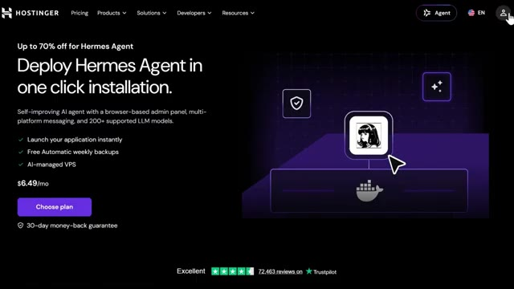
🔍 Agrandir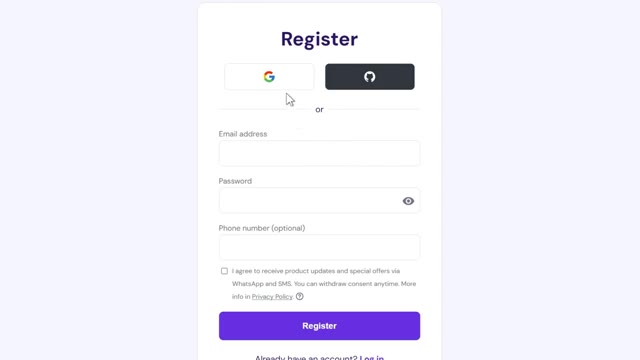
🔍 Agrandir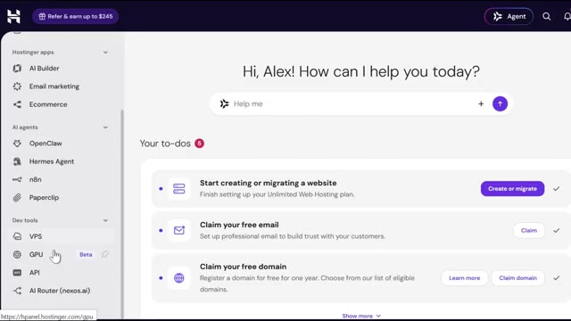
🔍 Agrandirpage, vous verrez le plan de l'agent Hermes. Et c'est celui que je recommande. Il est livré avec la configuration du catalogue Docker entièrement pré-construite. Il n'y a pas de frais par agent et cela vous donne assez de puissance de calcul pour des flux de travail multi-agents et des processus de longue durée sans que rien ne s'arrête brusquement. Cliquez sur choisir ce plan juste ici. Cela vous amène au paiement. Et avant de confirmer quoi que ce soit, vous verrez un champ pour un code promo. Tapez mon code, Alex Carter 10, et vous verrez 10 % de réduction sur votre total. Confirmez, finalisez votre paiement, et vous êtes officiellement configuré. Maintenant, voici quelque chose qui compte beaucoup,
Interface & Outils : Interface web de Hostinger (panneau de configuration et tarification d'agents IA).
Contenu textuel & Code : Tarifs d'abonnement pour Hermes Agent (5,99 $/mois pour 24 mois), options de gestion et résumé de commande avec code promo.
Action / Démonstration : Navigation et présentation des plans tarifaires et options de déploiement pour l'agent Hermes sur Hostinger.
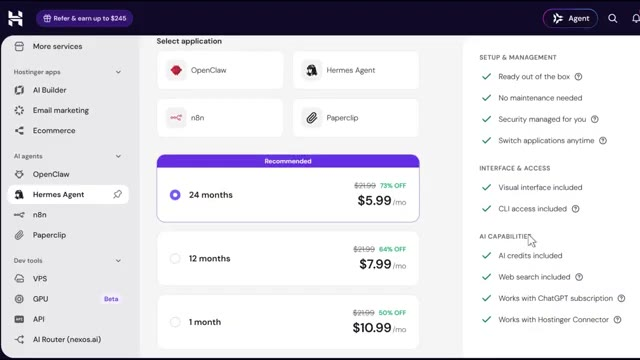
🔍 Agrandir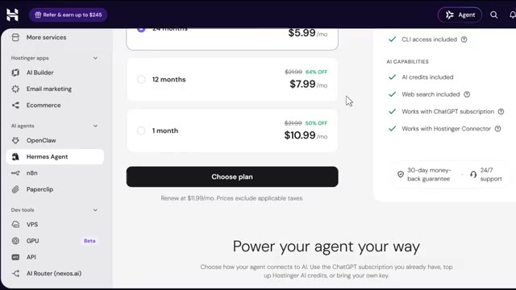
🔍 Agrandir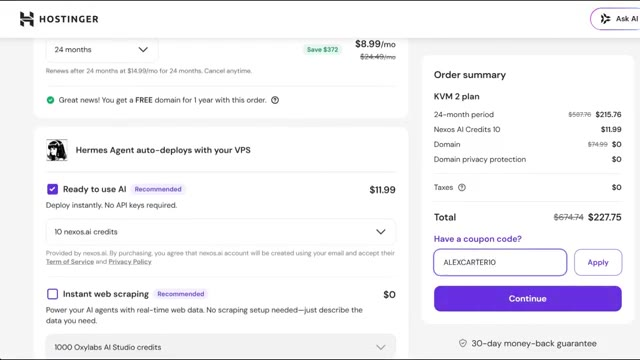
🔍 Agrandirparticulièrement si vous prévoyez de l'utiliser pour de véritables besoins professionnels. Vos données restent les vôtres. Chaque compétence qu'il apprend, chaque clé API que vous connectez, tout cela réside entièrement sur votre propre VPS privé. Rien de tout cela ne se trouve sur une plateforme tierce. Votre serveur lui-même bénéficie de plus d'une décennie d'expérience en infrastructure de Hostinger, hébergé dans ses propres centres de données propriétaires, surveillé par ses équipes de sécurité internes.
Interface & Outils : Interface web (Navigateur) - Site Hostinger, section FAQ et page de présentation des fonctionnalités de déploiement.
Contenu textuel & Code : Texte explicatif sur la sécurité des données ("Is my data private and secure?", environnements isolés, conteneurs sécurisés) et fonctionnalités de déploiement (Launch in one click, Security, Built in Docker manager).
Action / Démonstration : Navigation sur le site web pour illustrer la sécurité, l'isolation des données des utilisateurs et la simplicité de déploiement des agents IA.
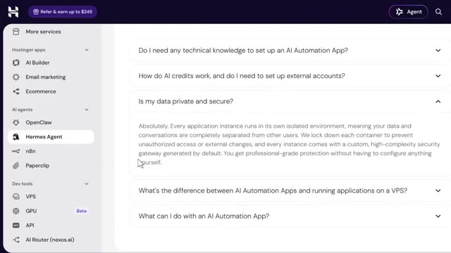
🔍 Agrandir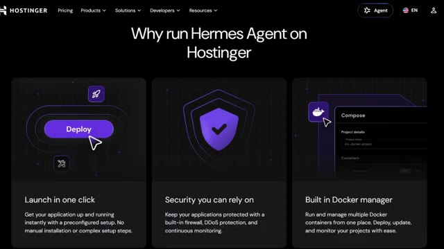
🔍 AgrandirEt si jamais vous ratez quelque chose, vous pouvez toujours revenir en arrière. Des sauvegardes hebdomadaires sont incluses par défaut et vous pouvez passer à des sauvegardes quotidiennes. Maintenant, déployons concrètement cette chose. Une fois que votre VPS est prêt, rendez-vous dans le tableau de bord de votre VPS et allez dans le gestionnaire Docker, puis dans le catalogue. Juste ici, recherchez l'agent Hermes et cliquez sur sélectionner.
Interface & Outils : Navigateur web affichant le site web et le panneau d'administration de l'hébergeur Hostinger.
Contenu textuel & Code : Articles de support technique sur les sauvegardes et interfaces de sélection d'agents IA (OpenClaw, Hermes Agent, n8n) et d'outils de développement (VPS, GPU).
Action / Démonstration : Navigation dans la documentation sur les sauvegardes puis basculement vers le tableau de bord pour configurer un outil ou un agent d'automatisation.
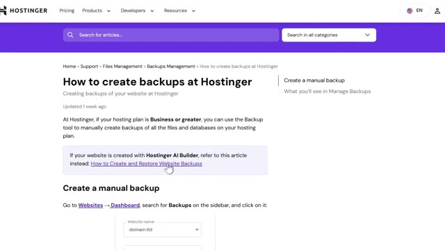
🔍 Agrandir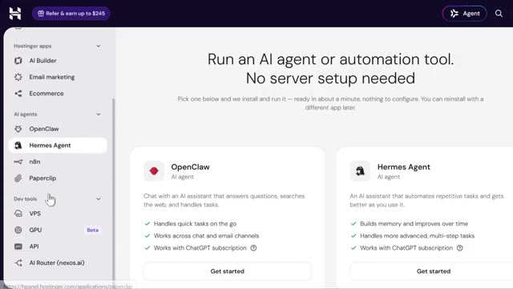
🔍 AgrandirMaintenant, pendant le déploiement, il va vous demander de penser à un nom d'utilisateur et à un mot de passe administrateur. Allez-y, configurez-les dès maintenant et assurez-vous de les conserver en lieu sûr, dans un endroit sûr. Vous en aurez besoin plus tard. Maintenant, voici quelque chose de vraiment utile. Vous n'avez pas vraiment besoin de gérer vos propres clés API si vous ne le souhaitez pas. Hostinger vous permet de connecter Hermes en utilisant leurs crédits intégrés à la place.
Interface & Outils : Interface de gestion cloud / Docker Manager
Contenu textuel & Code : Champs de configuration utilisateur, clés API Nexos et Oxylabs, gestion des crédits AI Router
Action / Démonstration : Configuration des identifiants administrateur et suivi du déploiement de l'application
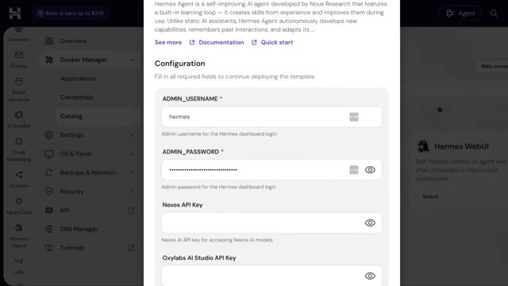
🔍 Agrandir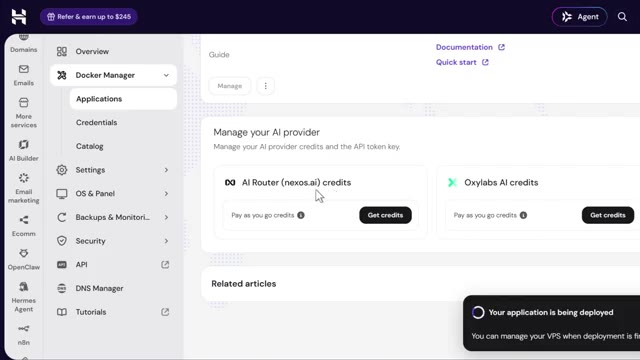
🔍 AgrandirLes crédits Nexus AI donnent à Hermes accès à des modèles comme Claude, Gemini et GPT via une passerelle unique. Et si vous avez ajouté des crédits Nexus lors de l'achat de votre VPS, cette clé API est générée et renseignée pour vous automatiquement. Il n'y a donc rien à copier ni à coller. Les crédits Oxylab fonctionnent de la même manière mais pour la recherche sur le web et l'extraction de données, permettant à votre agent de lire de manière fiable les pages riches en JavaScript et les sites qui bloquent normalement les requêtes de base.
Interface & Outils : Tableau de bord web de gestion VPS et Nexus AI (interface utilisateur hébergée).
Contenu textuel & Code : Section "Manage your AI provider" affichant des options de crédits ("Pay as you go credits", "Oxylabs AI credits") avec une infobulle indiquant : "Credits are consumed based on the AI model used. Top up to continue using AI features." Une notification en bas à droite indique "Your application is being deployed".
Action / Démonstration : Survol de l'interface pour afficher les détails sur la consommation des crédits des modèles d'IA.
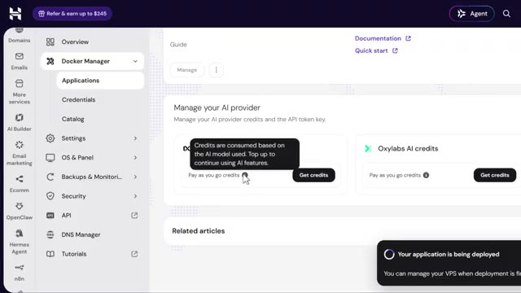
🔍 AgrandirSi vous avez acheté des crédits de scraping, cette clé se remplit aussi automatiquement. Maintenant, si vous préférez le faire manuellement, vous pouvez toujours entrer vos propres clés API Nexus, AI ou Oxylab dans ces champs vous-même. Et si vous n'avez ajouté aucun crédit du tout lors de l'achat, ne vous inquiétez pas. Hermes se déplacera quand même, vous aurez juste besoin de configurer vos propres identifiants de fournisseur ensuite avant qu'il ne puisse réellement exécuter des tâches. Vous pouvez fournir une clé API dès maintenant pendant le déploiement et en ajouter d'autres fournisseurs plus tard, alors ne réfléchissez pas trop à cette étape. Une fois que vous avez rempli les champs requis, cliquez sur déployer et la plateforme crée et démarre automatiquement le conteneur de l'agent Hermes ainsi que les arrière-plans requis.
Interface & Outils : Panneau d'administration web d'hébergement et de gestion cloud.
Contenu textuel & Code : Paramètres de configuration des crédits API, conteneurs Docker et jetons d'accès pour IDEs.
Action / Démonstration : Navigation dans le tableau de bord pour configurer les crédits API et vérifier l'état des applications.
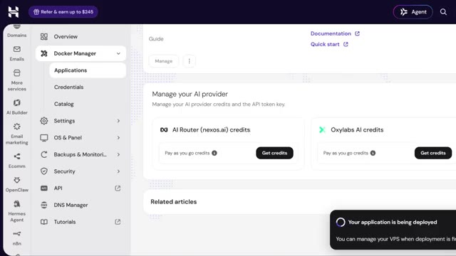
🔍 Agrandir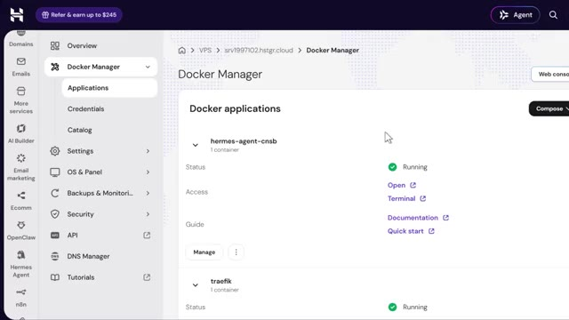
🔍 Agrandir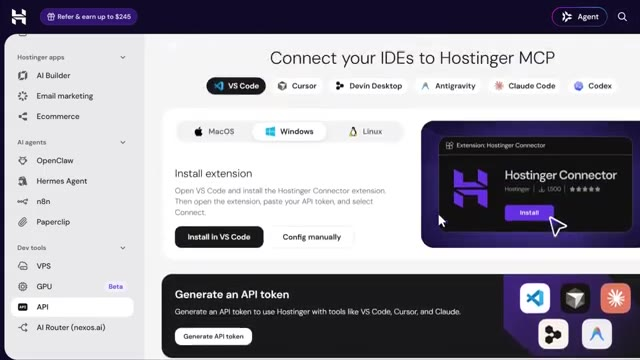
🔍 Agrandirservices. Une fois le déploiement terminé, Hermes s'exécute à l'intérieur d'un conteneur Docker et vous y accédez par le terminal. Donc depuis le tableau de bord de votre VPS, appuyez simplement sur le bouton d'ouverture juste à côté de votre projet Hermes, et cela ouvre directement une interface de commande Hermes. Maintenant, la première fois que vous ouvrez Hermes à l'intérieur du conteneur, il lance une courte procédure de configuration, et vous utilisez simplement vos touches fléchées pour naviguer et la touche entrée ou espace pour sélectionner. D'abord, il vous demandera de choisir un mode de configuration. Je vais sélectionner la configuration complète ici car la configuration rapide vous connecte simplement via le portail de news sans clés API, mais la configuration complète
Interface & Outils : Interface Web / Tableau de bord de l'agent Hermes (Nous Research).
Contenu textuel & Code : Écran de connexion authentifié et console interactive de l'agent Hermes demandant la configuration d'un fournisseur de modèle (/setup, /model).
Action / Démonstration : Présentation de l'accès à l'interface Web d'Hermes et de son écran de configuration initiale.
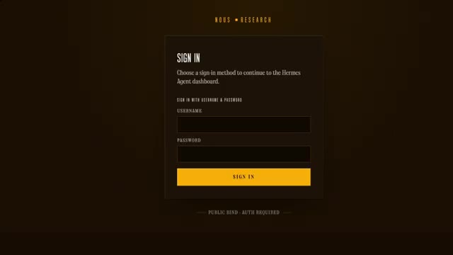
🔍 Agrandir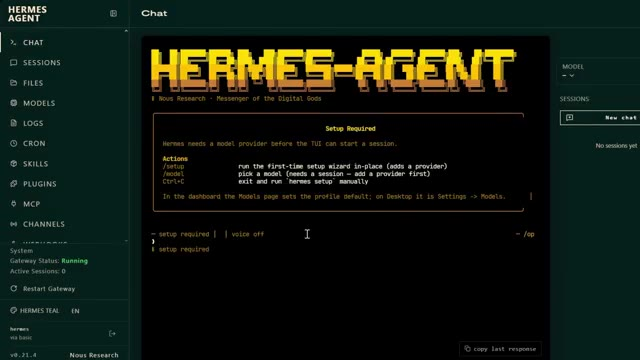
🔍 Agrandirvous permet de connecter vos propres fournisseurs, y compris ces crédits nexus.ai et Oxylabs dont nous venons de parler. Ensuite, sélectionnez votre fournisseur de modèle. Si vous achetez des crédits nexus comme nous l'avons fait, choisissez simplement nexus gateway dans la liste. Votre clé API est déjà remplie, donc laissez-la telle quelle et continuez.
Interface & Outils : Hermes Agent (interface de chat et de configuration d'agent IA)
Contenu textuel & Code : Menu de sélection des fournisseurs d'API incluant Nous Portal, Fireworks AI, OpenRouter, Anthropic, OpenAI, Qwen, xAI Grok, DeepSeek, Google AI Studio, Ollama Cloud et diverses options personnalisées.
Action / Démonstration : Sélection du fournisseur de modèle d'intelligence artificielle dans l'interface de l'agent.
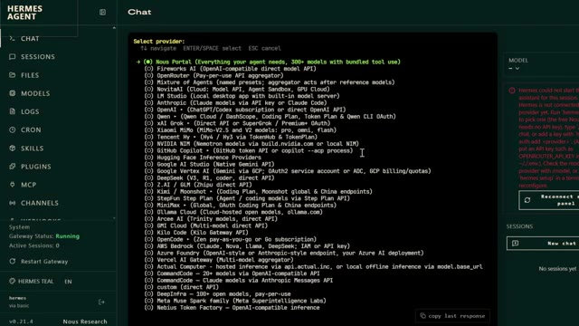
🔍 AgrandirEnsuite, il vous demandera de sélectionner votre backend de terminal et de l'exécuter sur SSH, que vous faites tourner sur une machine distante. Et c'est tout. Une fois la configuration terminée, Hermes démarre directement en mode CLI et vous pouvez commencer à interagir avec votre agent directement depuis le terminal. Maintenant, rappelez-vous, au début de la vidéo, j'ai mentionné que cela fonctionne parfaitement si vous faites tourner un agent de trading censé apprendre votre stratégie au fil du temps. Eh bien, j'ai en fait préparé un cours complet et gratuit exactement sur la façon de faire cela. Comment construire votre propre bot de trading agentique qui ne dort littéralement jamais en tournant 24h/24 et 7j/7 sur exactement ce même
Interface & Outils : Interface CLI Hermes Agent et plateforme web du cours.
Contenu textuel & Code : Messages de démarrage de l'agent Hermes ("summoning hermes...") et invite de commande interactive.
Action / Démonstration : Navigation et présentation de l'interface de l'agent Hermes en mode CLI.
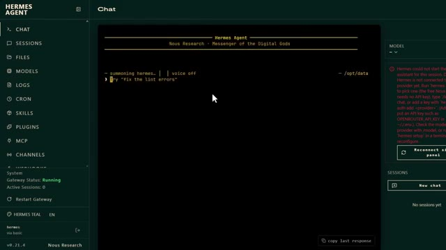
🔍 AgrandirLa configuration Hostinger que nous venons de déployer. Et le meilleur, c'est peu importe le marché que vous tradez, qu'il s'agisse de crypto, d'actions, de contrats à terme ou du Forex. Le framework fonctionne de la même manière. Vous le pointez simplement vers les actifs que vous tradez, vous lui donnez votre stratégie, et il tourne en continu en arrière-plan, surveillant le marché, exécutant votre logique, et ne ratant jamais une session parce que votre ordinateur s'est mis en veille ou que vous avez fermé votre navigateur. Je mettrai le lien vers le cours gratuit dans la description ci-dessous. Donc si vous vouliez un agent IA qui trade réellement pour vous au lieu de simplement discuter avec vous, allez voir ça juste après cette vidéo. Très bien, et regardez,
Interface & Outils : TradingView, BloFin, et interface web de formation.
Contenu textuel & Code : Fenêtre de recherche de symboles, graphiques de prix Bitcoin, indicateurs techniques (bandes de Bollinger, oscillateurs, volumes) et plan de cours. [DESC_IMAGE_3] Navigation dans la plateforme éducative et analyse de graphiques multi-actifs.
Action / Démonstration : Explications face caméra et analyse conceptuelle des marchés.
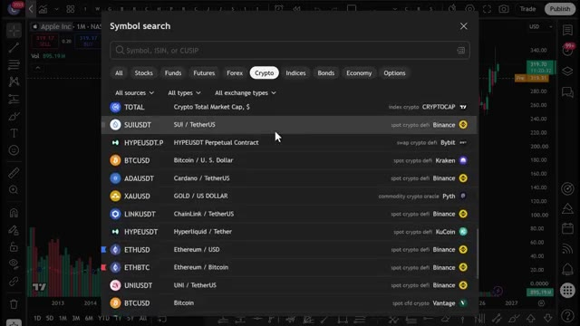
🔍 Agrandir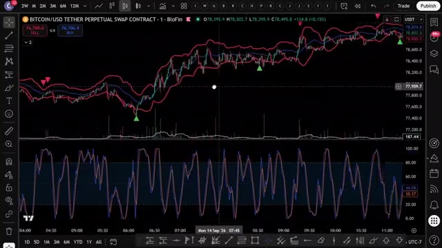
🔍 Agrandir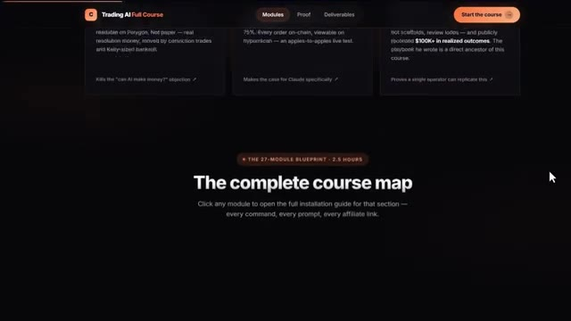
🔍 Agrandirpendant les quelques prochaines années, deux sortes de traders existeront. Ceux qui utilisent l'IA et ceux qui font encore tout manuellement. Même marché, résultats très différents. Voici comment vous vous mettez du bon côté de cela. J'ai rassemblé tout à l'intérieur de la communauté AI Trade Edge. Chaque invite, chaque bot, chaque modèle, chaque guide étape par étape que j'utilise personnellement, le tout au même endroit, et tout ce que je construirai à l'avenir sera ajouté directement dans le groupe dès sa sortie. Nous testons également des stratégies provenant de tout l'internet, en les automatisant à l'aide de PineScript, en les exécutant en direct, et
Interface & Outils : TradingView, site web de la communauté Alex Carter Trading.
Contenu textuel & Code : Graphique des prix du BTCUSDT avec indicateurs de volume et interface utilisateur de TradingView ; liste des capacités des 78 outils permettant à Claude de contrôler TradingView (lecture de graphiques, données OHLCV en direct, valeurs d'indicateurs RSI/MACD/EMA/Bollinger, modification des symboles, des unités de temps, etc.).
Action / Démonstration : Visualisation d'un graphique de trading crypto en chandeliers japonais et présentation des fonctionnalités de l'outil d'intelligence artificielle.
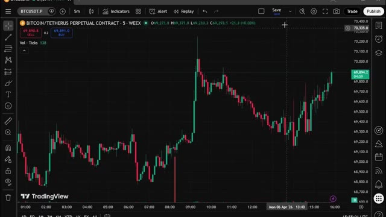
🔍 Agrandir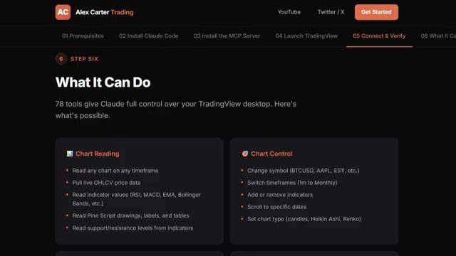
🔍 Agrandiren partageant exactement ce qui fonctionne et ce qui ne fonctionne pas. Vous n'obtenez donc pas seulement des outils. Vous obtenez une opération de recherche en direct. 79,99 dollars par mois. Un seul bon trade le rentabilise. Et les 100 premiers membres bloquent ce tarif de façon permanente. Après cela, le prix augmente. Le lien est dans la description. Vous ne pouvez vraiment pas vous permettre de rater ça. Un conseil rapide avant de terminer. Si vous utilisez des crédits nexus.ai ou Oxylabs, vous pouvez vérifier votre solde et recharger à tout moment. Depuis le gestionnaire Docker, puis Projets, vos cartes de crédit s'affichent tout en haut de la page.
Interface & Outils : Plateforme e-commerce Whop et tableau de bord de gestion de serveur cloud.
Contenu textuel & Code : Tarification d'abonnement (79,99 $/mois au lieu de 99,99 $), statistiques d'utilisation du CPU (2%), de la mémoire (11%) et stockage du serveur.
Action / Démonstration : Présentation de la page d'abonnement au service et affichage du panneau de contrôle technique du serveur.
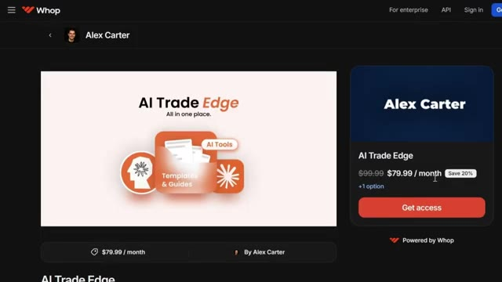
🔍 Agrandir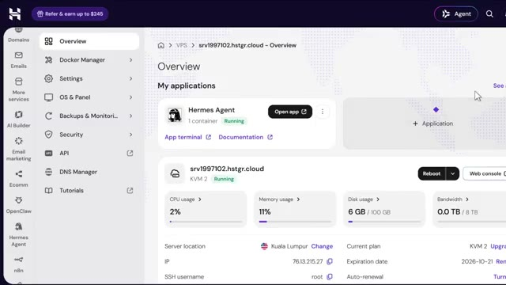
🔍 AgrandirSurveillez simplement votre solde nexus.ai. S'il s'épuise, Hermes arrête de générer des réponses jusqu'à ce que vous rechargiez. Donc, pour récapituler, la mémoire de votre agent survit et redémarre parce qu'elle fonctionne sur des volumes Docker persistants. Vos ressources VPS sont entièrement dédiées afin que rien ne soit bridé. Et c'est en ligne 24 heures sur 24 et 7 jours sur 7 sur tous les canaux que vous utilisez, vos données ne quittant jamais votre propre serveur.
Interface & Outils : Tableau de bord d'hébergement VPS (Hostinger)
Contenu textuel & Code : État du conteneur Hermes Agent (Running), utilisation du processeur (2 %), utilisation de la mémoire (11 %), utilisation du disque (6 Go / 100 Go), adresse IP et emplacement du serveur.
Action / Démonstration : Surveillance des ressources système et de l'état de l'application Hermes Agent sur le VPS.
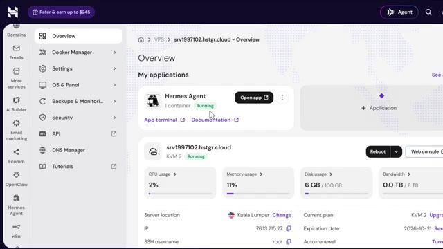
🔍 AgrandirDonc, si vous en avez assez des agents IA qui oublient tout dès que vous fermez l'onglet, allez récupérer le premier lien dans la description ci-dessous et utilisez le code Alex Carter 10 pour obtenir une réduction exclusive de 10 % sur le plan VPS Hermes Agent. Et si vous voulez le guide complet étape par étape sur la façon de construire votre propre système de trading agentique avec Claude, cette vidéo apparaît également à l'écran. Allez voir ça ensuite. Si vous avez trouvé cela utile, laissez un pouce bleu, cela aide vraiment la chaîne. Abonnez-vous si ce n'est pas déjà fait, et je vous vois dans la prochaine.
Interface & Outils : Sites web promotionnels (Hostinger, plateforme de cours en ligne Trading AI).
Contenu textuel & Code : Offre tarifaire VPS pour Hermes Agent (6.49$/mo) et statistiques de performance de différents modèles d'IA (Claude, DeepSeek, Grok, GPT-5).
Action / Démonstration : Présentation commerciale et promotion des liens affiliés du VPS Hermes Agent et du cours de trading IA.
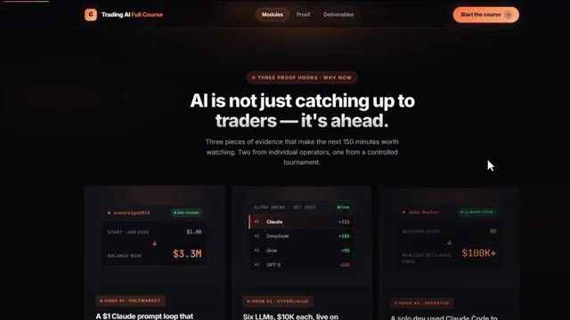
🔍 Agrandir